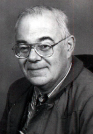

Please note: the AAS Obituaries are temporarily being hosted on this website while their full content is being ingested into the PubPub publishing platform newly adopted by the Bulletin of the American Astronomical Society. When the migration is complete, your existing links will take you to the final, migrated content. Contact peter.williams@aas.org with any questions.
Ronald A. Schorn (1935-2018)
Ronald Anthony Schorn was born on February 5, 1935, and was raised in Oak Park and Chicago, Illinois. He attended Loyola University and graduated in 1956 with an honors degree in physics; he minored in chemistry and math. He then earned a master’s degree in nuclear physics at the University of Illinois in Urbana. With the launch of Sputnik by the USSR on October 4, 1957, America was in a panic, and the nation quickly became motivated to keep pace with the Soviets by investing in the education of many, many scientists and engineers. The University of Illinois initiated a new doctoral program in astronomy, and Schorn switched fields to become one of their first astronomy doctoral students. After the completion of his Ph.D. (Schorn 1963) under the supervision of Stanley Wyatt, he moved to Pasadena, California, where he worked on the Apollo missions at the Jet Propulsion Laboratory.
Schorn spent a year in Washington, D.C., as the first Director of the Planetary Sciences Division of NASA. While at NASA he helped secure funding to build the 2.7-m reflector at the University of Texas’s McDonald Observatory.
During the 1960s Schorn became a key player in spectroscopic studies of the atmosphere of Mars. Using a number of 2- to 3-m class telescopes in the American Southwest in combination with high-resolution spectrographs, he was able to measure the precipitable water vapor content on Mars over the course of its seasons. As he points out in a review on the subject (Schorn 1971), the effective discovery of water on Mars was accomplished by Kaplan et al. (1964), but the results were not universally accepted. In 1969 the observations by Schorn and Stephen Little were highlighted in a two-column article in Time magazine (Anonymous 1969). The first definitive quantitative results were obtained by the Mariner 9 satellite, which arrived at Mars in late 1971 and whose mission lasted until October 1972 (Conrath et al. 1973).
From JPL Schorn moved to College Station, Texas, where he taught astronomy and meteorology at Texas A&M University from 1973 to 1981. From 1981 to 1992 he was Technical Editor of Sky & Telescope magazine. This was during the era when the magazine was a “must read” by amateurs and professionals alike. Then, after a decade in New England, which included the hobby of being a Revolutionary War re-enactor with the Menotomy Minute Men of Arlington, Massachusetts, he returned to College Station, where he wrote two books on the history of space exploration (Schorn 1998, Dethloff and Schorn 2003).
Schorn was an avid reader and storyteller, and like many a good storyteller, he often regaled his listeners using a measure of artistic license. One of his notable literary accomplishments is that he was the first to correctly identify the prototype of Sherlock Holmes’s nemesis James Moriarty as the Canadian-American astronomer Simon Newcomb.
In 1999 Schorn contracted Guillain-Barré syndrome and lay in bed for nearly a year, first in the hospital, then at home. His recovered primarily because his wife, who was a nurse, cared for him.
One day in the fall of 2018 Schorn fainted. This was attributed to arrhythmia of his heart. Before a pacemaker could be implanted, he died of heart failure.
He is survived by his wife of 60 years, Marcia; their five children, Peter, Ellen, Paul, Cathy, and Susan; one nephew; and six grandchildren. As his daughter Susan wrote, “The world feels a little smaller without him, but, as he would have reminded us, the universe is still expanding.”
Obituary written by: Kevin Krisciunas (Texas A&M University, College Station, Texas)
Acknowledgments: Marcia Schorn, Susan Schorn, Mark Lemmon, George Kattawar, and Richard Fienberg.
References:
Anonymous, “Moisture on Mars,” Time, April 4, 1969, 48.
B. Conrath, R. Curran, R. Hanel, V. Kunde, W. Maguire, J. Pearl, J. Pirraglia, J. Welker, and T. Burke, “Atmospheric and surface properties of Mars obtained by infrared spectroscopy on Mariner 9,” J. of Geophys. Rsch., 78 (20), 4267-4278 (1973).
Henry C. Dethloff, and Ronald A. Schorn, Voyager’s Grand Tour: to the outer planets and beyond. Washington, D. C.: Smithsonian Books, 2003.
Lewis D. Kaplan, Guido Münch, and Hyron Spinrad, “An analysis of the spectrum of Mars,” Astrophys. J., (1), 1-15 (1964).
Ronald A. Schorn, Radiation Effects on Earth Satellite Orbits, University of Illinois dissertation, 1963.
Ronald A. Schorn, “The spectroscopic search for water on Mars: a history,” in Planetary Atmospheres, Carl Sagan, Tobias C. Owen, and Harlan J. Smith, eds., IAU Symposium No. 40, Dordrecht: Reidel, 223-236 (1971).
Ronald A. Schorn, Planetary Astronomy from Ancient Times to the Third Millennium. College Station, Texas: Texas A&M University Press, 1998.
Obituary written by: Kevin Krisciunas (Texas A&M University, College Station, Texas)
Additional links:
BAAS Citation: BAAS, 2019, 51, 0301
SAO/NASA ADS Bibcode: 2019BAAS...51b0301K